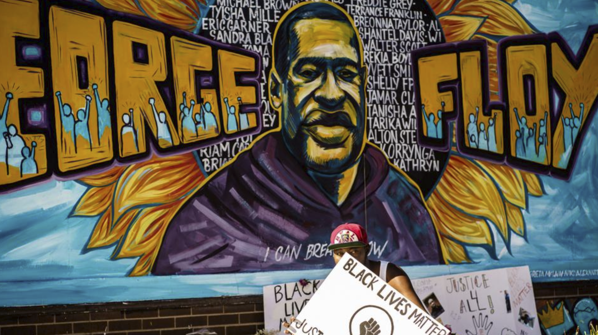
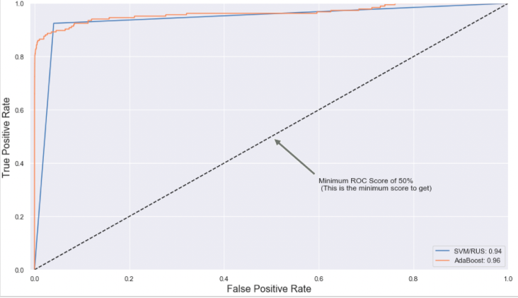
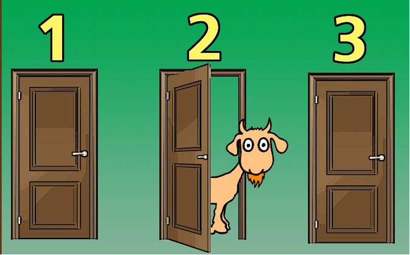
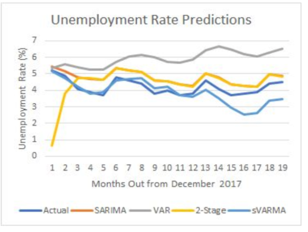

"My argument was not that what happens on that social media website is broadly representative of popular opinion but that what happens on Twitter is a good barometer of enthusiasm around movement-building and fandoms."-Charlie Warzel-New York Times In this project, I extracted George Floyd related tweets using API and implemented NLP models to discover trends, popular views and possibly explore public opinion.
This is a predictive modeling project. I built data pipelines to automate pre-processing and prediction of fraudulent transactions with high sensitivity& specificity scores by using imbalanced data methods such as SMOTE, RUS and Weights Adjustment.
In my job, I was tasked with collecting information about hundreds of properties from Government Appraiser Sites. The key data points were owner name, date of sale, sale price and grantee company. It was a great experience using selenium to interact with websites. Click for more!

The Monty Hall problem is a brain teaser, in the form of a probability puzzle, loosely based on the American television game show “Let's Make a Deal” and named after its original host, Monty Hall. In my code, I will simulate the Monty Hall problem and prove why the answer to the deceptively easy looking problem is not what most people think what it is.
This is an extremely comprehensive team project for which we used multiple time series models such as SARIMA, VAR, Linear Regression, SVARMA to predict assault rate, theft rate and unemployment rate in Chicago in 2017.
I enjoy working on new projects every day as either part of my job or just as a hobby. These projects can be web scraping, NLP, machine learning, data cleaning, data visualization, or just creating my own website. I will keep posting projects when data I use is not confidential. Thanks for checking out!